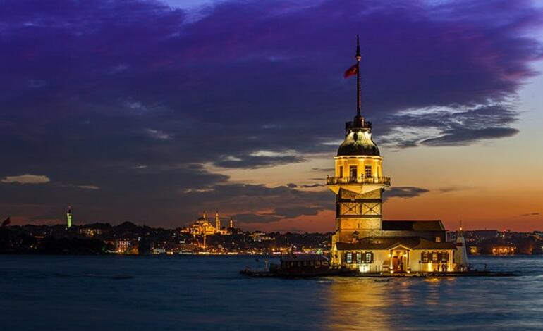
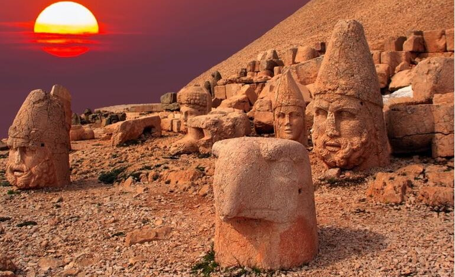
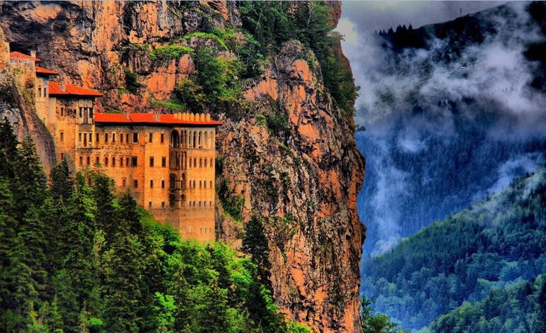
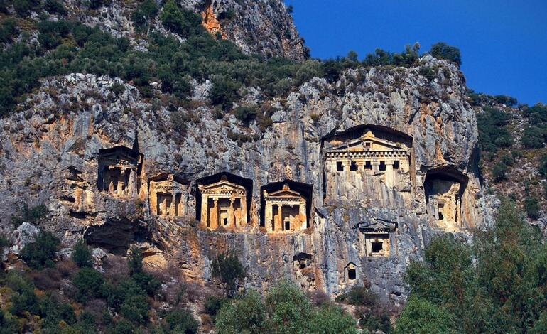
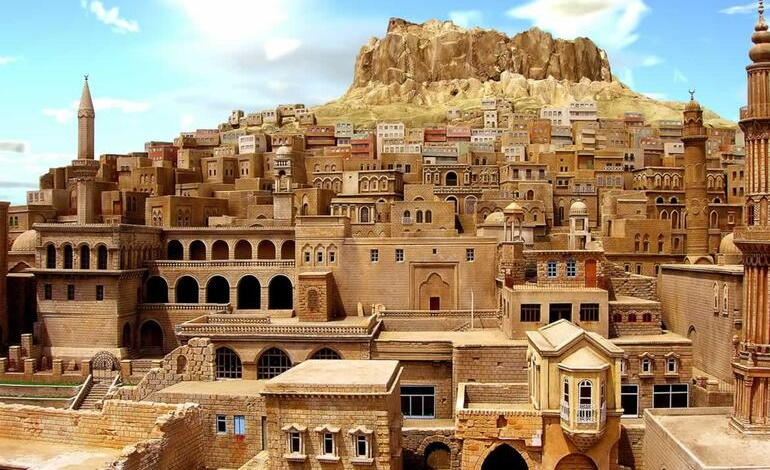

<div class="block bg">
  <div class="container">
    <div class="row align-items-center h-100">
      <div class="col-md-8 p-0">
        <div id="carouselExampleCaptions" class="carousel slide" data-ride="carousel">
          <ol class="carousel-indicators">
            <li data-target="#carouselExampleCaptions" data-slide-to="0" class="active"></li>
            <li data-target="#carouselExampleCaptions" data-slide-to="1"></li>
            <li data-target="#carouselExampleCaptions" data-slide-to="2"></li>
            <li data-target="#carouselExampleCaptions" data-slide-to="3"></li>
            <li data-target="#carouselExampleCaptions" data-slide-to="4"></li>
          </ol>
          <div id="slider" class="carousel-inner" (window:resize)="onResize($event)">
            <div class="carousel-item active">
              
              <div class="carousel-caption d-none d-md-block">
                <h5>Kız Kulesi / İstanbul</h5>
                <p>Üsküdar açıklarında yer alan kız kulesinin tarihi Bizans dönemine kadar dayanıyor.</p>
              </div>
            </div>
            <div class="carousel-item">
              
              <div class="carousel-caption d-none d-md-block">
                <h5>Nemrut Dağı/ Adıyaman</h5>
                <p>Adıyaman’ın Katha ilçesinde yer alır. Yüksekliği 2150 metreye ulaşır.</p>
              </div>
            </div>
            <div class="carousel-item">
              
              <div class="carousel-caption d-none d-md-block">
                <h5>Sümela Manastırı/ Trabzon</h5>
                <p>Trabzon’un kayalıklarına kurulan bu manastır Hristiyanlar için kutsal sayılmaktadır. </p>
              </div>
            </div>
            <div class="carousel-item">
              
              <div class="carousel-caption d-none d-md-block">
                <h5>Kral Kaya Mezarları/ Amasya</h5>
                <p>Helenistik dönemde Pontus Rum İmparatorluğu’na ait kaya mezarları Harşena Dağı’nın güney eteklerine
                  kalker oyularak yapılmıştır.</p>
              </div>
            </div>
            <div class="carousel-item">
              
              <div class="carousel-caption d-none d-md-block">
                <h5>Mardin Evleri / Mardin</h5>
                <p>Evlerin asıl kısmı olarak nitelendirilen ve ev hayatının büyük bölümünün geçtiği yere eyvan
                  denilmekte. Sokaklar birbirine bağlı.</p>
              </div>
            </div>
          </div>
          <a class="carousel-control-prev" href="#carouselExampleCaptions" role="button" data-slide="prev">
            <span class="carousel-control-prev-icon" aria-hidden="true"></span>
            <span class="sr-only">Önceki</span>
          </a>
          <a class="carousel-control-next" href="#carouselExampleCaptions" role="button" data-slide="next">
            <span class="carousel-control-next-icon" aria-hidden="true"></span>
            <span class="sr-only">Sonraki</span>
          </a>
        </div>
      </div>
      <div class="col-md-4 carousel-inner bc">
        <router-outlet></router-outlet>
      </div>
    </div>
  </div>
</div>
